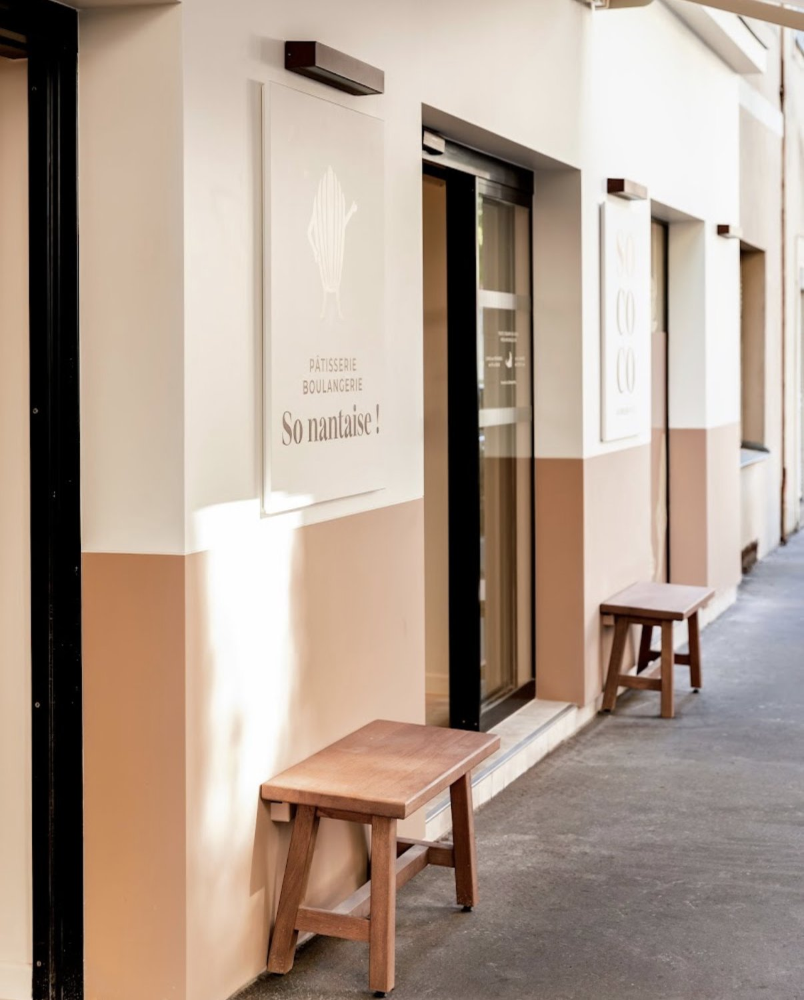
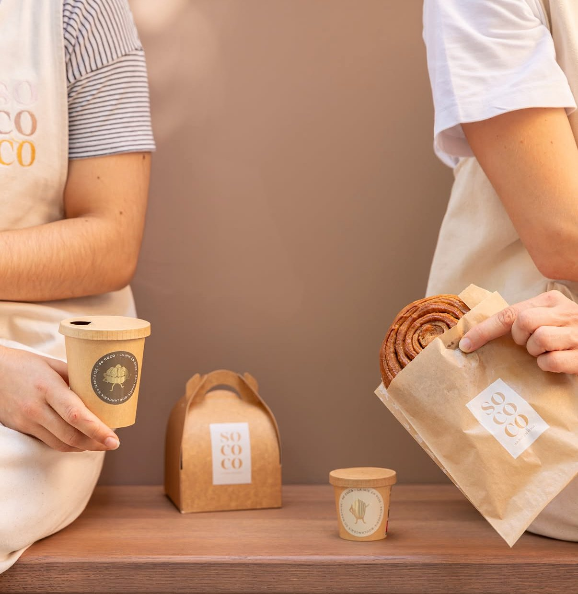
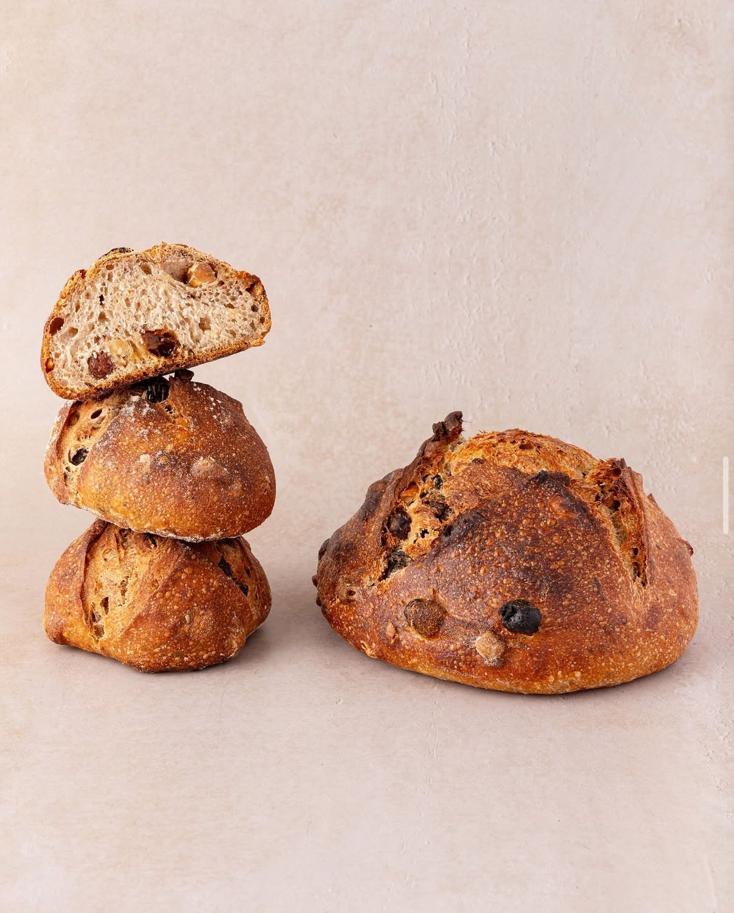
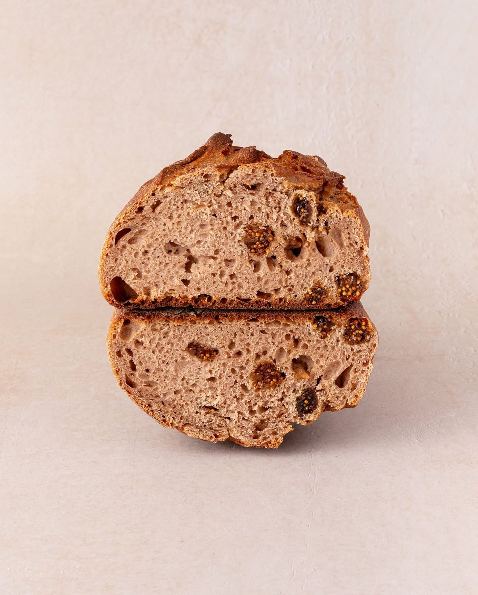
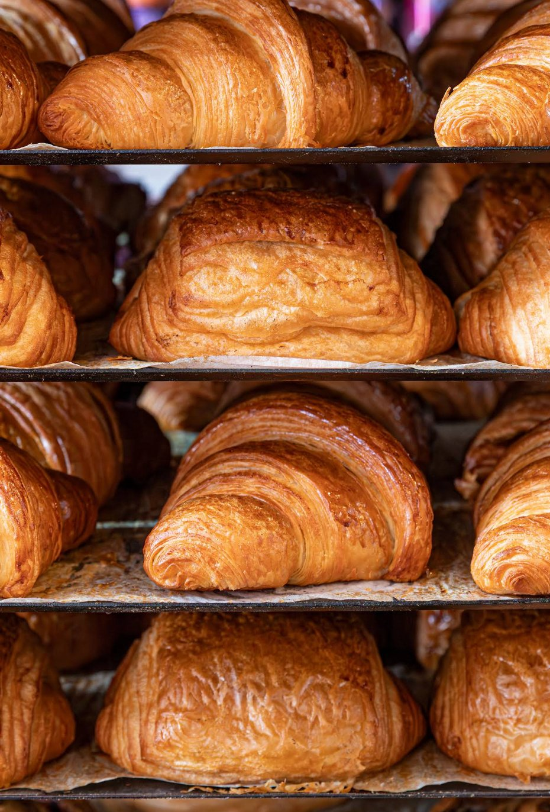
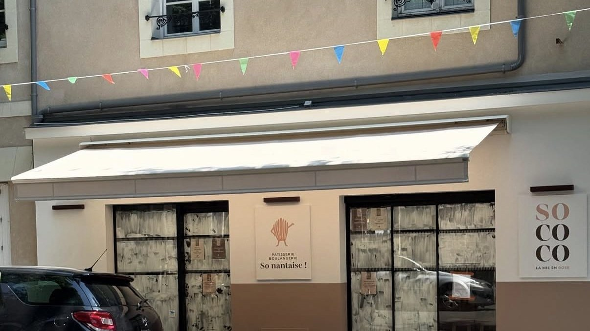
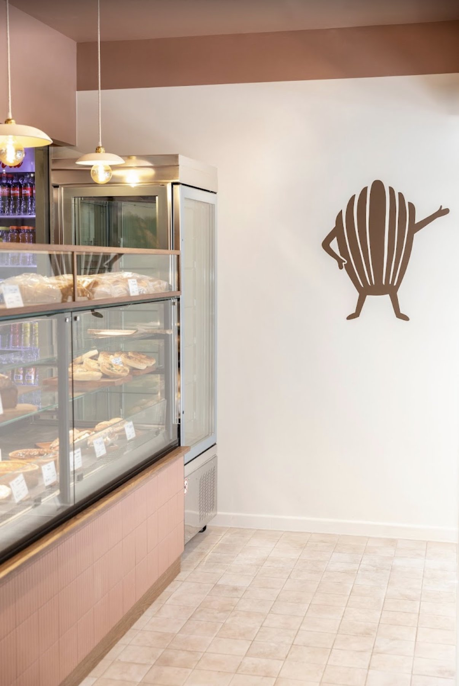

Pâtisserie & Boulangerie artisanale
Nantes — Canclaux
La mie en rose
La maison
Derrière le store crème de la rue Lamoricière, Chloé Béliard a ouvert au printemps 2025 la boulangerie-pâtisserie dont elle rêvait : un lieu doux, généreux et résolument gourmand, au cœur du quartier Canclaux.
Pains pétris et cuits sur place, viennoiseries dorées au fil de la journée, douceurs qui suivent les saisons — et une équipe qui vous accueille avec le sourire, du lundi matin au samedi midi.


Sur les étagères
Croûte fine, mie crème — celle qu'on prend par deux.
Noisettes et fruits secs : l'incontournable de la maison.
Doux et parfumé, comme un goûter d'automne.
La brioche roulée qui part avec le café, dans son sac kraft.
Pâtisseries et créations qui changent au fil des saisons.



La vitrine change tous les jours — le plus sûr, c'est de pousser la porte.
La boutique

Couleurs douces, bois clair, matériaux naturels : l'écrin imaginé avec les architectes de B.Concept prolonge l'esprit de la maison — crème en haut, rose en bas, comme ce site.
Sur le mur, la madeleine salue les passants. Et le samedi matin, la file déborde volontiers sur le trottoir.

Infos pratiques